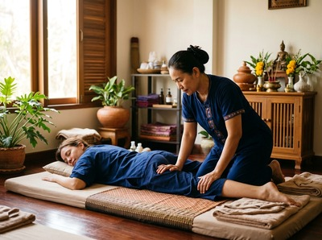

When injury pulls you out of action, the road back can feel frustratingly slow.
Whether it is a strained muscle from sport, a soft tissue injury from a fall, or persistent joint pain that refuses to settle, injury rehabilitation demands more than rest. Thai massage therapy, applied at the right stage of recovery, can play a meaningful role in restoring movement, reducing pain, and getting you back to full function sooner.
Injury rehabilitation is the structured process of restoring physical function, strength, and mobility following musculoskeletal damage. It encompasses a wide range of conditions: soft tissue tears, ligament sprains, repetitive strain injuries, post-surgical stiffness, and muscle imbalances caused by overuse or trauma. physical medicine and rehabilitation is recognised as a distinct medical specialty focused on enhancing functional ability and quality of life after physical injury or impairment. Common presentations include reduced range of motion, localised pain, swelling, compensatory muscle tension, and a loss of confidence in movement. Left unaddressed, these symptoms can become chronic, affecting posture, sleep, and everyday activity.

Soft tissue injuries are among the most common reasons people seek rehabilitation support. Tendons, ligaments, and muscle fibres heal with scar tissue, which is less elastic and organised than healthy tissue. Without targeted treatment, that scar tissue can restrict movement and leave the area vulnerable to re-injury.
Massage therapy addresses several of the core barriers to recovery. Improved local circulation accelerates the delivery of nutrients to damaged tissue, while manual pressure helps remodel scar tissue into more functional alignment. A systematic review of soft-tissue therapy for musculoskeletal injuries found evidence supporting its effectiveness for managing a range of upper and lower extremity conditions, with meaningful improvements in pain and function.
Sports massage, a treatment that applies precise pressure and friction techniques to targeted muscle groups and connective tissue, is particularly well suited to rehabilitation. It reduces protective muscle guarding around an injury site, restores pliability to stiff tissue, and improves proprioception, the body's sense of joint position and movement. For clients further along in recovery, Thai oil massage, which combines flowing therapeutic strokes with targeted pressure, is effective for rebuilding range of motion and easing residual tightness.
Swedish massage, using long, flowing strokes and gentle effleurage movements, is valuable in the earlier and more sensitive stages of rehabilitation, when the tissue needs stimulation without aggressive pressure. The choice of technique depends on the injury type, its stage of healing, and the client's comfort and goals. You can book your rehabilitation session online and the team will tailor the approach to exactly where you are in your recovery.
At Serendipity Massage Therapy & Wellness on Hope Street in Glasgow City Centre, your therapist will begin by asking about your injury: how it occurred, how long you have been dealing with it, and what activities it is currently limiting. This is not a formality. It directly shapes the session. Therapists trained in the techniques developed by head therapist Jariya Malone work methodically through the affected area, addressing not just the injury site but the compensatory tension patterns that typically develop around it.
Sessions are conducted at the pace your body requires. If you are in an active recovery phase, the work will be focused and specific. If you are dealing with chronic residual stiffness from an older injury, the approach shifts to restoring mobility and tissue quality over a course of regular sessions. Book your first appointment online to get started with a therapist who understands the difference between treating a symptom and supporting a genuine recovery.
Injury rehabilitation massage is particularly valuable for recreational and competitive athletes recovering from sprains, strains, or overuse injuries; office workers who have developed repetitive strain issues in the neck, shoulder, or wrist; people returning to activity after surgery or immobilisation; and anyone carrying the long-term effects of an untreated soft tissue injury. If you live or work near Hope Street and have been managing an injury with rest alone, arranging a session at Serendipity is a practical next step.
In most cases, yes, provided the massage is appropriate for the stage of healing. In the acute phase immediately following injury, direct massage over the site is not recommended. Once initial inflammation has settled, typically after 48 to 72 hours, therapeutic massage becomes a beneficial part of recovery. Your therapist at Serendipity will assess where you are in the healing process and adjust the technique accordingly.
When soft tissue heals, it lays down collagen fibres that form scar tissue. This scar tissue tends to be denser and less flexible than the original tissue. Massage applies targeted friction and pressure that helps to realign and remodel these fibres, improving tissue elasticity and reducing the risk of adhesions that can restrict movement and cause ongoing discomfort. Regular treatment through the rehabilitation period produces better long-term outcomes than rest alone.
This depends on the nature, severity, and age of the injury. A recent acute soft tissue injury may respond well within three to six sessions when combined with appropriate movement and rest. Chronic or long-standing injuries, or those involving significant compensatory muscle tension, may benefit from a longer course of treatment. Your therapist will give you an honest assessment after the first session and help you plan accordingly.
Massage therapy and physiotherapy work best as complementary approaches rather than alternatives to each other. Physiotherapy focuses on exercise-based rehabilitation and movement re-education, while massage addresses soft tissue restrictions, pain, and circulation. Many clients find that regular massage alongside a physio programme accelerates their recovery and helps them get more from their rehabilitation exercises by reducing muscle tension and improving mobility.
Sports massage is the most targeted option for sports injuries, applying specific techniques to the affected muscle groups and connective tissue to reduce tension, remodel scar tissue, and restore function. Thai oil massage is effective for broader recovery and range of motion work, while Swedish massage suits the earlier stages of recovery when lighter pressure is more appropriate. At Serendipity, your therapist will recommend the right treatment based on your specific injury and recovery stage.
Yes. Many people carry the effects of injuries that were never fully rehabilitated: residual stiffness, compensatory tension in surrounding muscles, and restricted range of motion that has become normalised over time. Massage can work effectively on long-standing tissue restrictions, improving circulation, releasing adhesions, and restoring mobility that clients often assumed was permanently lost. It is never too late to address an old injury with skilled therapeutic work.